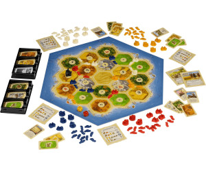

The women and men of your expedition build the first two settlements. Fortunately, the yet uninhabited land is rich in natural resources. You build roads and new settlements that eventually become cities. Will you succeed in gaining supremacy on Catan? Barter trade dominates the scene. Some resources you have in abundance, other resources are scarce. Ore for wool, brick for lumber - you trade according to what is needed for your current building projects. Proceed strategically! If you found your settlements in the right places and skillfully trade your resources, then the odds will be in your favor. But your opponents are smart too.
Check out this gameplay to understand more and see how the game flows.